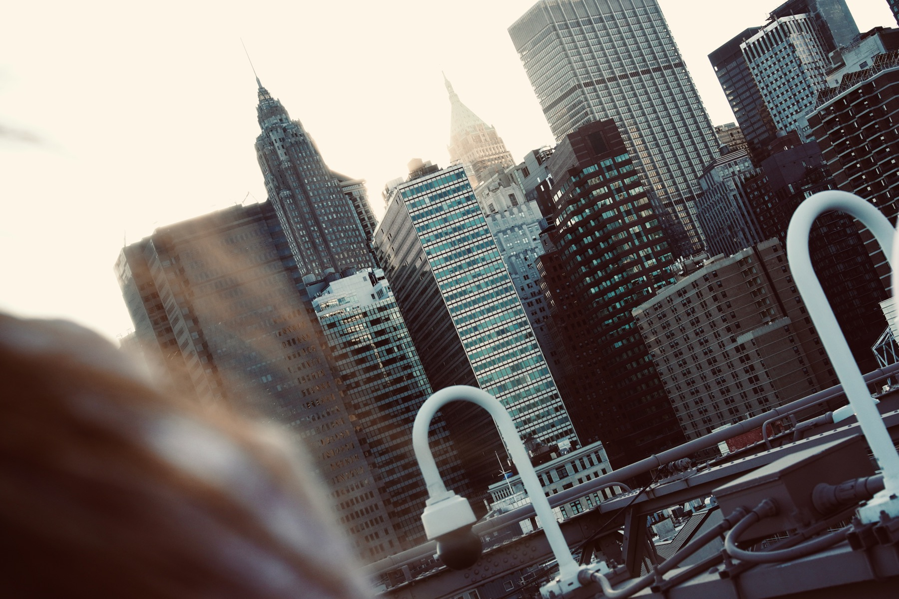
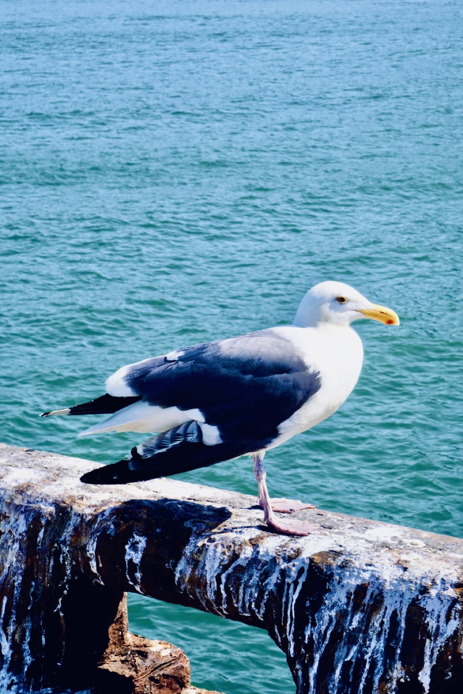
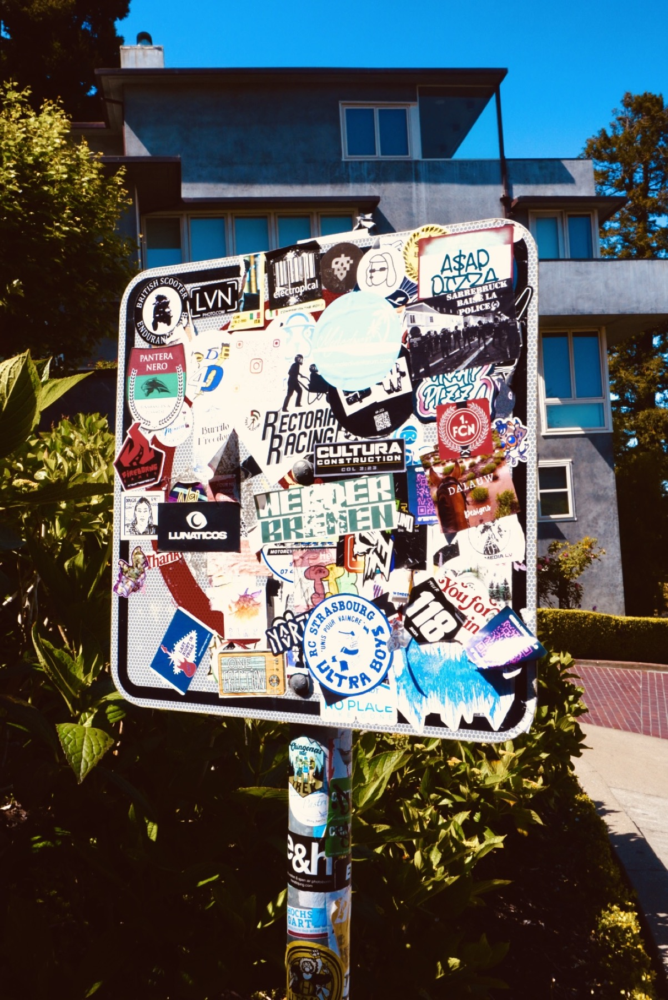
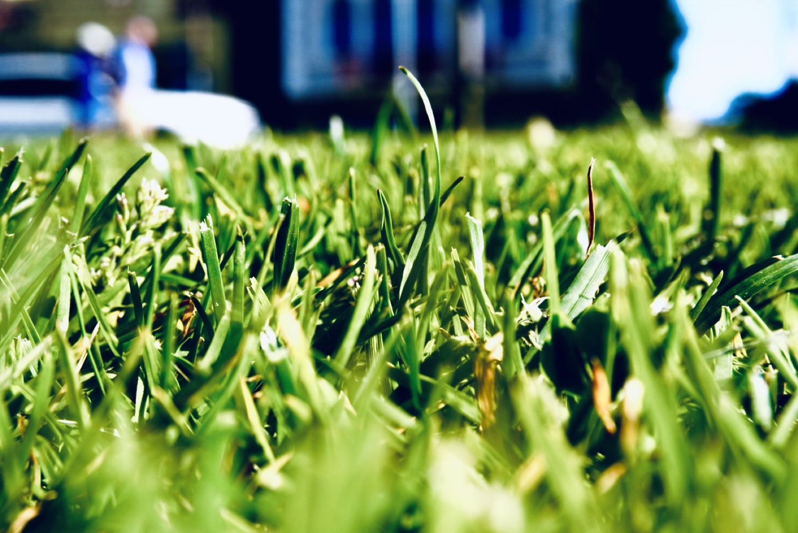
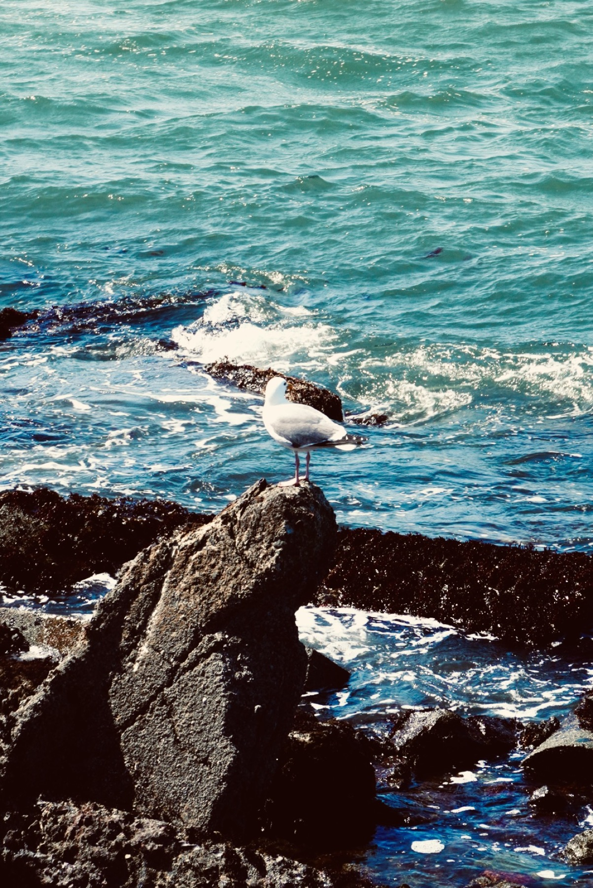
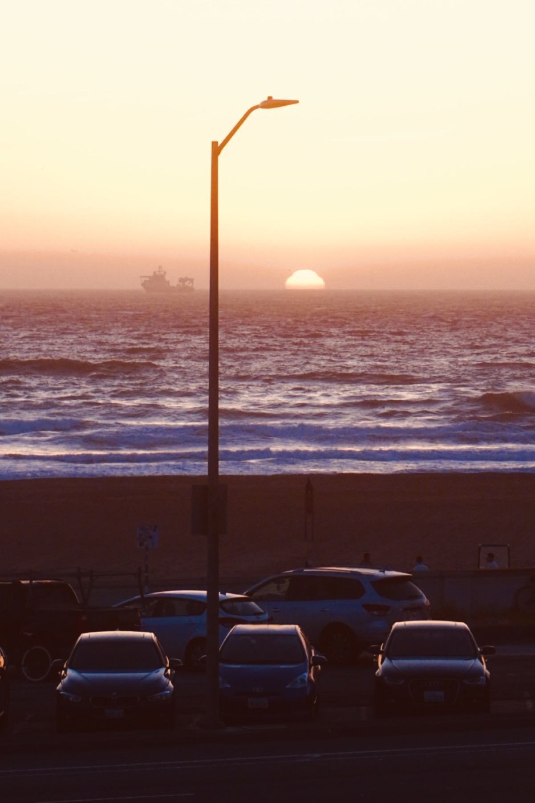

A STUDENT IMAGE ARCHIVE
Small proofs
of being there.
A place for personal, imperfect photography and videography — share your talent with us.
SUBMIT A FRAME ↘
keep what
you notice
01 / SELECTED BY EDITORS
Approved
gallery.
A place for still and moving
images to live together.
02 / EDITOR'S MONTHLY PICKS
Monthly
picks.
Four frames chosen by the editor to hold onto this month.
DOUBLE-CLICK A PHOTO TO VIEW IT FULL SIZE ↗

by Judy Zhu
by Judy Zhu
by Judy ZhuEDITOR'S NOTE
Discover
the world.
Go out and feel the world. Let the small pieces you gather become the world as you see it.


04 / SUBMIT
Add a piece
to the photo book.
Your work goes to the editorial desk first. If approved, it appears in the Gallery.